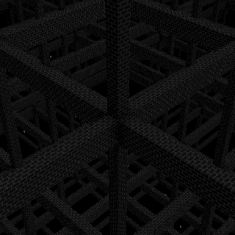
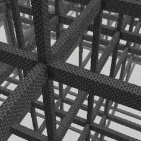

Sequence is a safe, Void type Layer 0 dimension and is one of the two possible entrance dimensions leading to the Wonderland[D]. If a player is to be caught by one of the roaming entities in the Overworld and is not put in a death state, they will be transported here. The layout is a series of simple scaffoldings made out of bricks, placed in a grid pattern. Each scaffolding is a chunk wide (16x16). These scaffoldings can be easily traversed, but vertical movement can prove to be tricky if sufficent building blocks or an eltyra is not present in one's person. There are no entities present, however there are also no structures either. Making exploration pointless. One can safely prepare here before they decide to jump down. Falling down into the void will take you to the Wonderland[D]. This is the only known way to exit.
Threat level: 0
Layer: 0
Name: Sequence
Type: Void